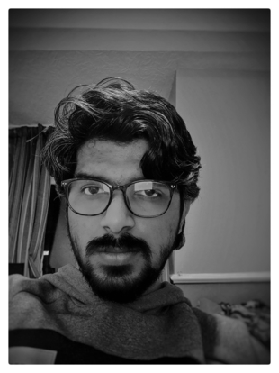

Highly organized, progressive and proactive data scientist with 9+ years of experience in software development of data-intensive applications,
overcoming complex architectural and scalability issues in diverse industries.
Proficient in predictive modelling, data processing, data mining algorithms as well as scripting languages including Python, Javascript and Java.
- Education
-
University Of Hertfordshire UK
September 2020–September 2022
Major: MSc. Data Science and Analytics
-
Cochin University Of Science and Technology India 2007–2011
BTech. Electronics and Communication Engineering
- Certifications
-
Google Certified Tesorflow Developer May 2020
This certificate exam tests a developer's foundational knowledge of integrating machine learning into tools and applications.
The certificate program requires an understanding of building TensorFlow models using Computer Vision, Convolutional Neural Networks, Natural Language Processing, and real-world image data and strategies.
Data Science Professional Certificate IBM February 2020
The Certificate earner is ready for a career in data science with demonstrated ability to solve for real-world problems.
They can apply Data Science methodology - work with Jupyter notebooks - create Python apps - access relational databases using SQL & Python -
use Python libraries to generate data visualizations - perform data analysis using Pandas -
construct & evaluate Machine Learning (ML) models using Scikit-learn & SciPy and apply data science & ML techniques to real location data sets.
IBM Certified Cloud Developer V1 & V2 August 2017
This IT professional understands concepts essential to the development of Cloud native applications.
- Skills
-
Data Science
Python | TensorFlow | Pandas | Numpy | Scikit-learn | SciPy
Programming languages
Python | Java | JavaScript
Web Technologies
Spring Boot/MVC | Hibernate | Ajax | REST API | J2EE | JSF
Databases
Oracle DBMS | MySQL | MongoDB
Misc.
GIT | GitHub | SVN | Jenkins | Maven | Unix | Linux | Jupyter Notebook
- Experience
-
Data Analyst- Intern Thinqi - LMS , Swansea, UK June 2021 - Till Date
Thinqi Learning Management System Platform
- Created Recommendation system to suggest courses, playlists and events to Students
Data Scientist IBM, Bangalore, India April 2020 - October 2020
Retail Management Systems - Data Analytics POC
- Built proof of concept (POC) for understanding feasibility of Machine learning and data
analytics in the legacy system
- Created plan recommendation system and helped end users on easier plan selection.
- Did Shopping cart analysis and helped stores upselling accessories.
Senior System Engineer IBM, Bangalore, India June 2015 - April 2020
Retail Management Systems | Client: Sprint
- Modernized RMS systems from powerbuilder to Java/Rest APIs backend and HTML/JavaScript/Angular Frontend based system
- Helped the system expansion from the hard limit of 5000 concurrent systems to virtually unlimited using Java bases system
- Helped Client to reduce the system maintenance expenses
- Leading a agile lane of 5 developers, 2 Testers and 1 System Analyst from offshore. Managing the task allocations and code review for them.
- Been part of Migration of Java 1.6 to Java 1.8 and Jboss Upgrade.
- Created ESN Loader tool using Bootstrap and Angular JS which has been used widely across the team. The tool has saved 2 hour of manual efforts per week
- Got appreciation from Client management for Innovation
Software EngineerMphasis an HP Company, Chennai November 2013 - June 2015
Air Freight Invoices & GTP |Client: FedEx
- AFI and GTP are the invoicing systems used in tracking FedEx’s expenses spent on third party flights
- Migrated AFI and GTP systems from Sybase DB to Oracle database.
- Migrated AFI and GTP systems from Powerbuilder to Java/ JSF bases system
- Automated the build and deployemnt to weblogic server using Jenkins
- Completed performance testing using Apache Jmeter
- Automated few regression testcass using Selenium
- Closely worked with the client on moving the system successfully to production within the planned time frame
Associate Software EngineerMphasis, Mumbai November 2012 - November 2013
Electronic Blue Sheet Reporting(EBSR)| Client: JPMorgan Chase
- Compliance reports are previously generated with mainframe systems. The user interaction with the server was painful.
EBS is the solution for this issue using the newly evolving concepts semantic web. The main
challenge in this solution is the creation of a generalized framework which can be used for
different scenarios with mior tweaks.
- Been part of a team designed a UI framework from the ground up.
- The UI components are declared in a non relational databse (Stardog Tuple store)
- Conducted Unit testing using Junit
- Familiarized with various JS frameworks such as JQuery, JQgrid etc.
Associate Software EngineerMphasis, Mumbai June 2012 - November 2012
Tech Careers Migration | Client: JPMorgan Chase
- Tech careers are the JPMC website for technically skilled freshers,
This project was to migrate tech careers sites from asp .NET to Fatwire content management
system.
- We have completed the project on time and got appreciation from the client for timely
delivery
- Could work with a flexible content management system (CMS) called Fatwire
- Worked on Javascript on Frontend
- Conducted Unit testing
- Worked on Tortoise SVN repository to keep scripts versioned.
- Languages
- English | Hindi | Malayalam | Tamil
Last Updated: Sep 28, 2021 Thank you.